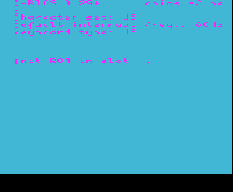
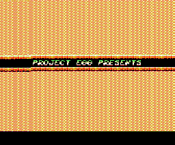
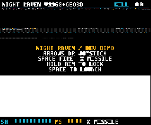
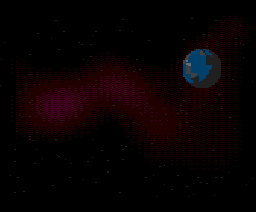

リングの中の立方体。淡い地に黄と紺、下端は黒帯。ROM は MSX_LOGO-clean-final.rom。このスプラッシュは C-BIOS のロゴカートリッジの絵である。
シリコンの前に、絵で止める。 — この本はファイルの注釈を並べた目録ではない。表紙の左は C-BIOS が描いた五色のロゴ、右は @kanon-ai が一人で書いた AUREL VAULT の題字である。原稿は
btron/src/emulators/bx8/ にあり、時計は 57.2727 MHz の一つ、Z80 と R800 は同じ演算手が胸の札で切り替える。十四本のカートリッジは初期化番地まで届いた。絵になって頁に残ったのは、そのうちの一部である。
"This book is not a stack of file comments. The left plate is the five-color logo C-BIOS drew. The right plate is the AUREL VAULT title written by @kanon-ai, Solo Game Author. The manuscript is at btron/src/emulators/bx8/. One clock, one processor, fourteen cartridges at their init vectors, and only some of them became a picture."
口絵
口絵 (Frontispiece)
MSX_LOGO-clean-final · AUREL VAULT · 256×212
本を開いた最初に置く二枚。左は画面 5、モード
0x0C、五色のスプラッシュ。右は画面 8、モード 0x1C、V9968 の 256 色を通った題字。番号を色そのものとして塗っていた頃、右の絵は雑音に見えていた。
"The two plates a book opens on. Left, screen 5, the five-color splash. Right, screen 8, the title seen through the V9968 table of 256 colors. When those numbers were painted as if they were already color, the right-hand picture looked like noise."
金の題字、マントの人物、石段、奥の空中都市。Solo Game Author は @kanon-ai。画面 8、モード 0x1C、R#20 は 0x11。この枚は VRAM を 256 色で描き直した題字である。
NOTE: キャプション帯は、この枚に無い。理由は、y が 175 以降がまだ絵の続きで、帯の HMMV と字形の LMMM が発行される前に走行が止まっていること。
AUREL VAULT. Solo Game Author: @kanon-ai. Screen 8, mode 0x1C, R#20 0x11. This plate is the title redrawn from VRAM through the 256-color table. NOTE: the caption bar is not in the frame. From y 175 on the bytes are still the picture, and the run stopped before the HMMV and the glyph LMMM.
序
序。原稿はどこにあるか (Where the Manuscript Lives)
src/emulators/bx8 · Sibling of tronMSX · Proofs in build/bx8
tronMSX が C99 で先に書いた機械を、同じ倉庫の Bluespec がレジスタの転送として書き直した。起動の原板はデポの
build/bx8/ に残り、この本が載せるのはその表示用の写しである。
"tronMSX wrote the machine first, in C99. Bluespec, in the same depot, rewrote it as a transfer of registers. The original boot plates stay in build/bx8/. This book keeps display copies."
| 場所 | 中身 |
|---|---|
src/emulators/msx/ |
tronMSX。確定性 C99。bx8 の参照実装。 |
src/emulators/bx8/bsv/ |
Bluespec の SoC。CPU、スロット、V9958、PSG、SCC、PCM、PPI。 |
src/emulators/bx8/sim/verilator/ |
C99 ハーネス sim_rom.c と fpga_rom_runner。 |
src/emulators/bx8/syn/ |
EP4CE55、iCESugar-Pro、XC7A35T、Tang Mega 60K のラッパ。Yosys は iCESugar-Pro。未焼成。EP4CE15F17C8 は外した。 |
build/bx8/ |
起動証明。PPM、ログ、summary.txt、PNG。ALL_DONE、14 本とも exit 0。 |
doc/md/FPGA.md |
設計メモ。パスは src/emulators/bx8/ を指す。 |
目次
目次 (Contents)
二十一章 · 時計から鍵まで · OPLL と Geo3D の章は無い
章は、機械の中を歩く順に並んでいる。カートリッジの絵を出した部屋は第1章である。第21章の五つの足場は、家を建てるあいだ外に組んだ検証であり、口絵はそこから出ていない。NOTE: OPLL と Geo3D の章は無い。理由は、その原稿がツリーに無いこと。
"The chapters follow a walk through the machine. The room that produced the plates is chapter 1. Chapter 21 is the scaffold used while the house was rising, and the frontispiece did not come from it. NOTE: there is no chapter for OPLL or Geo3D, because those manuscripts are not in the tree."
| BSV | 頁 | 章 |
|---|---|---|
TopMSXTurboR.bsv |
第1章 機械そのもの | カートリッジを迎える一つの部屋。 |
MSXClocks.bsv |
第2章 一つの時計 | 遅い歯も速い歯も、同じ針から出る。 |
Bus.bsv |
第3章 番地の言葉 | 記憶の無い、手紙の形だけの章。 |
memory/MemoryArbiter.bsv |
第4章 誰が話してよいか | 画面の走査が先に話し、残りは輪番。 |
memory/SlotManager.bsv |
第5章 四つの頁と六つの窓 | 16 KB ごとに、どの棚を開くか。 |
memory/Mapper.bsv |
第6章 512 KB の引き出し | スロット 3 の四頁が、別々の段を指名する。 |
cpu/CPUCore.bsv |
第7章 一人の演算手 | Z80 と R800 は、札で足を速める同じ人。 |
cpu/Decode.bsv |
第8章 命令に名前を付ける | 実行の前にある、八進の命名。 |
cpu/ALU.bsv |
第9章 旗と、積 | 結果より先に残る、八本の旗。 |
cpu/T9769C.bsv |
第10章 速い方へ切り替える | 速さは命令ではなく、胸の札の一本。 |
vdp/V9958.bsv |
第11章 絵が現れるところ | 口絵の右が、色を得た場所。 |
vdp/VDPRegs.bsv |
第12章 画面の覚え書き | 歩く前に、画面が自分の形を書くノート。 |
vdp/Raster.bsv |
第13章 ビームの歩き | 228 歩の行のうち、絵になるのは 168。 |
vdp/Blitter.bsv |
第14章 矩形を塗る手 | 題字の本体は、この手を待たずに書かれた。 |
vdp/YJK.bsv |
第15章 まだ呼ばれない色 | 式は書棚にあり、ビームはまだ開かない。 |
audio/PSG.bsv |
第16章 三本の笛 | MSX の最初の声。耳の照合はまだ無い。 |
audio/SCC.bsv |
第17章 五つの波形 | メモリの一角に置いた、手描きの波。 |
audio/PCM.bsv |
第18章 サンプルの息 | 真ん中の 128 が、沈黙。 |
io/PPI.bsv |
第19章 スロットと鍵の番 | 朝、四つの頁はスロット 0 を見ている。 |
io/Keyboard.bsv |
第20章 十一行の鍵盤 | 口絵は、どの鍵も下ろさないまま止めた。 |
TopPhase1.bsv … TopPhase5.bsv |
第21章 組み立ての足場 | 人が住むのは、足場を外したあとの部屋。 |
附録 A
附録 A。棚の番地 (The Shelves)
57.2727 MHz · 24-bit · C-BIOS turbo R
第2章の時計と第5章の窓を、一枚の表に戻しておく。記憶は朝、すべて
0xFF で満たされている。ハーネスはカートリッジの前に、C-BIOS の turbo R を BIOS の棚へ置く。
"The clock of chapter 2 and the windows of chapter 5, set back into one table. Memory wakes full of 0xFF. The harness lays C-BIOS turbo R on the BIOS shelf before the cartridge."
| 物理番地 | 窓 | 備考 |
|---|---|---|
0x000000 |
メイン BIOS 32 KB | cbios_main_msxtr.rom。リセットは F3 C3 D2 23（DI; JP $23D2）。 |
0x008000 |
サブ ROM 16 KB | スロット 3-1、ページ 0。 |
0x010000 |
マッパ RAM 512 KB | スロット 3-0。 |
0x080000 |
影の DRAM | S1990 のビット 6 が下りたとき、スロット 0-0 が BIOS の代わりに開く。 |
0x100000 |
カートリッジ A | CPU $0000 が物理 0x100000、$4000 が 0x104000。NOTE: 16 KB をページ 1 と 2 に鏡写しするのはハーネスである。スロット係の BSV はバンクを持たない。48 KB で $4000 に AB がある像は、ハーネスがページ 0 から載せる。 |
0x200000 |
カートリッジ B | 第二窓。今回の 14 本は A 側。 |
0x300000 |
VRAM | SCREEN 2 のネームは $1800、色は $2000、パターンは $0000。 |
附録 B
附録 B。口絵以外の絵 (Every Plate Besides the Frontispiece)
frames/ · 口絵と重ならない十枚
口絵の二枚が、この本の表に出す絵である。五色のロゴは口絵に一枚、AUREL VAULT の題字も口絵に一枚。同じ絵はここでは繰り返さない。この列は、それ以外の掲載である。YAZZIER、Dynamite Go! Go!、Night Raven の二枚は同じランナーの以前の PPM で、縦の縞は第13章のビームが 168 歩を 256 画素に引き伸ばした跡である。平らな枚は、その平らなまま置く。
"The two plates of the frontispiece are the pictures this book puts forward. The five-color logo is there once, and the AUREL VAULT title is there once. This row does not repeat them. YAZZIER, Dynamite Go! Go!, and the two Night Raven plates are earlier PPM files from the same runner. Their vertical stripes are chapter 13's beam, stretching 168 steps into 256 pixels. A flat frame stays flat."

「The cracker: Egor」「keyboard type: JP」「No ROM in slot」が読める。画面 2 の文字は、この枚で出ている。
NOTE: 末尾の SP はページ 0 に落ちている。理由は、割り込みのあとスタックがどこで壊れたか、この枚だけでは決まっていないこと。

20 フレームでは黒のままである。120 フレームで「PROJECT EGG PRESENTS」が出る。下 20 行は 192 ラインの外で黒。

メニューが読める。「ARROWS OR JOYSTICK」「SPACE TO LAUNCH」。14 色。CPU が VRAM に書いた絵を、V9958 が走査している。
NOTE: Geo3D の演算器は無い。理由は、Geo3D.bsv がツリーに無く、このメニューがそのコプロセッサを呼んでいないこと。

星と星雲と、右の惑星。CPU が VRAM に書いた絵を V9958 が走査している。
NOTE: 幾何アクセラレータは無い。理由は、Geo3D.bsv が無く、この惑星も VDP の走査であること。
青一色。下の帯は黒。
NOTE: ネームは 0。スプライトは VRAM にあるが走査が描かない。表示は下りて枠色だけが返り、120 フレームでも BIOS の OTIR から出ない。
One blue, and a black band under it. NOTE: the name table is 0. The sprites sit in VRAM and the scan does not draw them. Display is down, so only the border color returns, and at 120 frames the CPU is still inside the BIOS OTIR.
黒。
NOTE: LDIR までは SP 0xF37C。その後スタックが RAM を離れる。原因は未確定。
Black. NOTE: through the LDIR the stack pointer is 0xF37C. After that the stack leaves RAM. The cause is not settled.
黒。
NOTE: EX (SP),HL と SBC HL,ss のあと除算は戻る。355 フレームまで色は一つ。ネームテーブルは 0。PC は C-BIOS の乗算 $3196、SP は $4E96、R#1 は 0x60。参照の画面 1 の影にはまだなっていない。
Black. NOTE: after EX (SP),HL and SBC HL,ss the division returns. Through 355 frames the frame is one color. The name table is 0. PC is the C-BIOS multiply at $3196, SP is $4E96, R#1 is 0x60. It is not yet the screen-1 silhouette of the reference.
緑一色。
NOTE: ネームテーブルの「C-BIOS」は VRAM にある。画面 0 は文字を歩かず、R#7 の上位ニブルのパレット色を一面に返す。
One green. NOTE: the name table holds the word C-BIOS in VRAM. Screen 0 does not walk the characters, and returns the palette color of the high nibble of R#7 across the whole field.
黒。
NOTE: 画面 7。走査の列が無く、R#7 の上位ニブルの平らな色のまま。
Black. NOTE: screen 7. The scan has no column walk, and the frame stays the flat color of the high nibble of R#7.
暗い面。
NOTE: 400 フレームのあと R#2 は 0x1F、表示は頁 0 の細いヘッダのまま。メニューは頁の外にあり、Y=512 からの HMMM は着いていない。その走行の PC は $19BD。
A dark field. NOTE: after 400 frames R#2 is 0x1F and the display is still the thin header on page 0. The menu is off that page, and the HMMM from Y=512 has not arrived. The PC of that run is $19BD.
附録 C
附録 C。十四本の台帳 (The Ledger)
assets/msx/*.rom · Exit 0 · CARTRIDGE BOOT SUCCESS
短い走行は 20 フレーム、上限 2 億サイクル。長い四本は 120 フレーム、上限 4 億。
build/bx8/frames-20/summary.txt が台帳で、PC の列はそこを写している。口絵と、その後の Bad Apple の消息は、絵の列に書く。初期化番地へ届くことと、絵が完成することは、別の出来事である。
"The short runs are twenty frames, capped at two hundred million cycles. Four longer ones are one hundred twenty frames. The PC column copies build/bx8/frames-20/summary.txt. The frontispiece, and the later news of Bad Apple, are written in the picture column. Reaching an init vector and finishing a picture are different events."
| ROM | 載せ方 | 最後の PC / SP | 絵 |
|---|---|---|---|
| MSX_LOGO.rom | 16 KB、AB、0x4010 |
0x4075 / 0xF2E8 Z80 |
五色のロゴ |
| MSX_LOGO-v2.rom | 16 KB、同じ系統 | 0x4075 / 0xF2E8 Z80 |
ロゴ |
| MSX_LOGO-clean-final.rom | 16 KB、CHGMOD 5 | 0x4075 / 0xF2E8 Z80 |
五色のロゴ（表札） |
| YAZZIER.ROM | 32 KB、ページ 1 から、CHGMOD 2 | 0x0391 / 0x2EFE R800 |
SCREEN 2 の文字 |
| Dynamite Go! Go! | 32 KB、CHGMOD 2 | 0x467B / 0xC5F3 Z80 |
120 フレームで題字。20 フレームでは黒。 |
| c0man.rom | 16 KB、BIOS の SCREEN 1 のまま | 0x0345 / 0xF350 Z80 |
青一色。NOTE: ネームは 0。スプライトは VRAM にあるが走査が描かない。表示は下りて枠色だけが返り、120 フレームでも BIOS の OTIR から出ない。 |
| xracing_v1.0.4.rom | 48 KB、ページ 0 から。$4000 の AB、初期化 0x4010 |
0x19B6 / 0xEA90 Z80 |
黒。NOTE: LDIR までは SP 0xF37C。その後スタックが RAM を離れる。原因は未確定。 |
| Bad Apple (ASCII16) | 2 MB、ホスト側 ASCII16。初期化 0x4810 |
台帳は 0x0039。現行のコアは C-BIOS の乗算 $3196。Z80 |
黒。NOTE: EX (SP),HL と SBC HL,ss のあと除算は戻る。355 フレームまで色は一つ。ネームテーブルは 0。PC は C-BIOS の乗算 $3196、SP は $4E96、R#1 は 0x60。参照の画面 1 の影にはまだなっていない。 |
| BULLRUSH.ROM | 1 MB、ASCII16、R800 | 0xEC00 / 0xF2FC |
緑一色。NOTE: ネームテーブルの「C-BIOS」は VRAM にある。画面 0 は文字を歩かず、R#7 の上位ニブルのパレット色を一面に返す。 |
| AUREL_VAULT.rom | 1 MB、ASCII16、R800 | 台帳 0x8D94 / 0xF2FA。題字の長い実行は BIOS $19Bx を周回する。 |
題字（表札）。画面 8、EPAL。Solo Game Author は @kanon-ai。NOTE: キャプション帯は無い。y が 175 以降は絵の続きで、HMMV と字形の LMMM は未発行。20 フレームの平らな緑は 別枚。 |
| btron8.rom | MegaROM、R800 | 0xFF94 / 0xEFBB |
黒。NOTE: 画面 7。走査の列が無く、R#7 の上位ニブルの平らな色のまま。 |
| NIGHT_RAVEN_FLIGHT_DEMO | MegaROM、R800 | 0xCC2F / 0xF2FA |
メニュー |
| NIGHT_RAVEN_GEO3D | MegaROM、R800 | 0xEC60 / 0xF2FE |
惑星 |
| NEON_REVENANT | 4 MB、ASCII16、R800 | 0x026B / 0xF2CD |
暗い面。NOTE: 400 フレームのあと R#2 は 0x1F、表示は頁 0 の細いヘッダのまま。メニューは頁の外にあり、Y=512 からの HMMM は着いていない。その走行の PC は $19BD。 |


NOTE:
"Seven disk images stay on disk. There is no WD2793 and no disk ROM in bx8."
assets/msx/ のディスク七枚（512 Bytes MSX1 Demo、An Uncle in Brazil、Audio Wave 3、Bad Apple Pyhesty、IOD GIF Demo、Puzzle Egg、Xmas Demo）は実行していない。理由は、FDC もディスク ROM も無く、ブートセクタを偽らないこと。"Seven disk images stay on disk. There is no WD2793 and no disk ROM in bx8."
附録 D
附録 D。まだ頁になっていないもの (What Has No Chapter Yet)
Screen 0 · Sprites · YJK closed · No bitstream
実装してある道は、各章に書いた。口絵の二枚が、いま絵として確定している範囲である。下の表は、まだ安定していないものだけを NOTE として置く。
"What is implemented is written in the chapters. The two plates are the pictures this machine has cleared. The table below is only what is not yet stable, each row a NOTE."
| 項目 | 状態 |
|---|---|
| SCREEN 0 | NOTE: モード 0x01 は文字を歩かない。表示中のその他のモードと同じく、画素は R#7 の上位ニブルのパレット色を一面に返す。BULLRUSH の「C-BIOS」は VRAM にあり、画面には出ない。 |
| スプライト | NOTE: スプライトの床は VDPRegs が計算し、走査はそこを読まない。c0man の青は、空のネームと、VRAM にあるまま描かれないスプライトと、下りた表示の枠色である。 |
| 画面 8 と EPAL | ある。V9958 が R#20 ビット 4 で pal256 を引く。表札の AUREL VAULT の題字がそれ。NOTE: YJK の復号は 関数だけで、走査は呼ばない。記録された R#25 は 0 である。 |
| 画面 6 / 7 | NOTE: 走査の列が無い。画素は R#7 の上位ニブルのパレット色である。btron8 は画面 7 のまま、その平らな色。 |
| Bad Apple | EX (SP),HL と SBC HL,ss は CPUCore にあり、除算は戻る。NOTE: 現行のフレームは黒のまま。ネームテーブルは 0、PC は C-BIOS の乗算 $3196、R#1 は 0x60。台帳の PC=0x0039 はその前の記録。 |
| NEON REVENANT | NOTE: 400 フレームのあと R#2 は 0x1F、表示ページは細いヘッダのまま。メニューをページ 0 へコピーする HMMM は、その枚ではまだ着いていない。 |
| xracing の SP | NOTE: 台帳では LDIR のあと SP が RAM を離れる。原因は未確定。 |
| ASCII16 バンク | NOTE: バンク切替はハーネスのホスト側。BSV のスロットマネージャはバンクレジスタを持たない。 |
| OPLL / Geo3D / FDC | NOTE: OPLL.bsv も Geo3D.bsv もフロッピー制御も無い。バスの番号 3 は空席である。 |
| 音 | NOTE: PSG、SCC、PCM のレジスタと拍は各章にある。参照機との耳の照合は残していない。固定した走行は絵である。 |
| 基板 | NOTE: Yosys スクリプトは iCESugar-Pro 用である。ビットストリームは生成していない。焼いていない。EP4CE15F17C8 は基板にしない。 |
附録 E
附録 E。同じ絵をもう一度 (Reading the Plates Again)
make run_rom · MSX_FRAMES · MSX_VRAM
デポの根から走る。既定の ROM は五色のロゴ、
assets/msx/MSX_LOGO.rom である。Makefile は src/emulators/bx8/sim/verilator から五段上をデポと見なし、BIOS も同じ距離を歩く。
"Run from the root of the depot. The default ROM is the five-color logo. The Makefile counts five levels up from src/emulators/bx8/sim/verilator, and the BIOS walks the same distance."
make -C src/emulators/bx8/sim/verilator run_rom \
|
カートリッジ入場のあと何枚残すかは MSX_FRAMES（既定 20）。MSX_VRAM=1 はネーム、色、パターン、スプライト属性の非ゼロ数を出す。入場しなければ exit 2。PPM は失敗時も書く。 |
隣室
隣の実験室 (The Next Rooms)
tronMSX · C-BIOS · Emulators Index